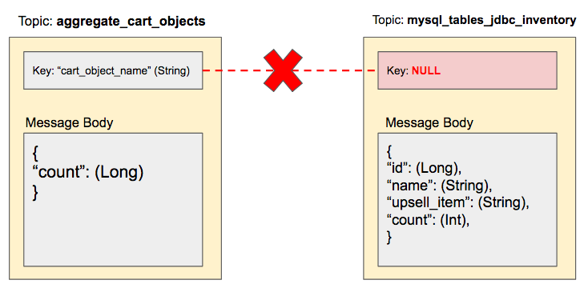
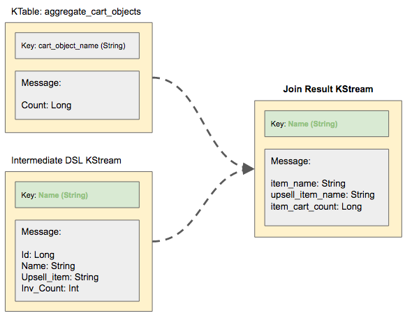

Building the Next-Gen Retail Experience with Apache Kafka and Computer Vision
Part 1 of 4
Authors: Josh Patterson, Stuart Eudaly, Austin Harris
Date: INSERT DATE, 2019
In this series of blog articles, we take on the perspective of the enterprise development team of a fictional Fortune 500 Retailer "Big Cloud Dealz" looking to integrate emerging technology to re-invent the in-store customer experience.
Retail stores are under more pressure than ever to "be like Amazon.com" in terms of tailoring the shopping experience for customers. This is especially true with Amazon's acquisition of Whole Foods and their original concept "AmazonGo." On the online front, we see shoppers expecting a customized shopping experience with recommendations based on their past viewing habits. We also see Amazon innovating with a storefront that mimics the online experience with a dizzying array of sensors and cameras. This series of blog posts gives a real world example in how a non-Amazon retailer could add some of these features to their retail experience by leveraging Apache Kafka (specifically Confluent's enterprise platform) and advanced object detection in computer vision. The shopping experience arms race has begun and there is no turning back now.
The venerable brick-and-mortar retailer "Big Cloud Dealz" badly wants to compete with the evolving shopping landscape and has made the concerted effort to integrate emerging technologies into their customer experience. Founding CEO, "Big Cloud Ron" (@BigCloudRon), loves technology but has been burned in the past by fancy tech ideas. Big Cloud Ron has mandated that IT approach this project in a way that is iterative and adaptable as they figure out "what works" and "what does not."
So, with the stage being set, we take a look at the notes from the first meeting where the enterprise team kicks off their project:
A Commerical for the K-Mart Blue Light Special
- Big Cloud Ron wants to increase engagement with his customers in a unique, personalized, and timely way that drives upsell. He wants to combine real people with technology -- something online retail cannot do.
- He wants customers to interact with a salesperson "at the right time in the right context." Big Cloud Ron, being a student of retail history, wants a modern version of the classic K-Mart Blue Light Special.1
- He wants the team to create the following effect in store with technology: create a dynamic in-store special that will prompt a sales associate to move to a specific aisle to upsell a specific product based on some business logic based on what people are shopping for "at that moment."
- He wants to offer a dynamic special that will have the chance to create the most extra margin possible. So, it will be necessary to know the summary of what items are in everyone's basket combined before they hit the registers.
Since we now know what management wants, let's take a look at the system architecture necessary to accomplish it.
Application Architectural Overview
Now that IT knows the business goal, here are a few key points they need to focus on to implement this system:
- Latency is a big deal for this application. If they don't have the aggregate contents of all the shopping baskets in a timely fashion, they can't make a business decision on which items to offer the upsell on in real-time. This makes their biggest focus to be on the streaming aspect of this application. The team has been reading a lot about how much success other companies have had with Apache Kafka, so they want to give that a shot.
- Kafka will handle the data ingest and aggregation part, but they still need a way to see the contents of all shoppers' shopping baskets while they shop. The team knows that object detection has gotten a lot better recently, so they want to leverage that to index the baskets' contents. They'll also need some sort of device attached to the shopping cart that can run this detection algorithm and send the output to the Kafka system.
- They don't really want to process this data in batch because latency is a killer for this situation. The longer they wait, the more likely the shopper is either in line for checkout or out of the store.
- They're going to leverage Confluent's packaging of Apache Kafka as their streaming data collection and processing system.
Digging into the Apache Kafka Platform
- The type of application they were looking for wasn't as good of a fit for the batch world due to the latency requirements.
- Streaming apps tended to differ from MapReduce (or Spark, batch, etc.) applications as they tended to implement core function of the business as opposed to computing analytics.
- Real-time apps work better as event-driven, while database-based applications are fundamentally table driven.
- Having stream processing mechanics built into the ingest platform is handy and more efficient than trying to cobble this together from multiple systems.
- Given that the team had to build an embedded application for Shopping Cart 2.0, being able to build everything else on a single platform was a benefit.
A quote from Confluent's site goes on to state:
The team also likes the idea of Kafka (as opposed to trying to put something together themselves) because they don't have to maintain another custom, internally-built system. Why? When building complex systems there are only so many parts you want to "own" as many things become a rabbit hole that distract from your end goal and most folks don't have time to miss their project dates."Consider a simple model of a retail store. The core streams in retail are sales of products, orders placed for new products, and shipments of products that arrive. The “inventory on hand” is a table computed off the sale and shipment streams which add and subtract from our stock of products on hand. Two key stream processing operations for a retail outlet are re-ordering products when the stock starts to run low, and adjusting prices as supply and demand change."
Jay Kreps' Blog Article: "Introducing Kafka Streams: Stream Processing Made Simple"
The General Application Architecture
Based on several whiteboarding sessions, the team comes up with a general design for what they want to do with the "Green-Light Special" application. In the diagram below, we see the architectural overview for this streaming Kafka-based application.

- A shopping cart (2.0) with an attached camera and wifi unit (likely an ARM-based embedded system) with an object detection model loaded to detect specific objects from the camera.
- A Kafka cluster back in the data center to collect all of the incoming data from the shopping carts, organizing it into logical topics for processing.
- A group of streaming applications leveraging Kafka's Streaming API to give the retail store's team a real-time look at what items are in customers' baskets across the store.
I DONT NEED COMPUTER VISION BECAUSE I CAN SEE THE FUTURE. AND IN THE FUTURE I BRING THE BLUE LIGHT SPECIAL BACK TO RETAIL. AND IT WILL BRING THE WOOOOO BACK TO RETAIL.
— BigCloudRon (@BigCloudRon1) August 8, 2018
Footnote
1. In popular culture, Kmart became known for its "Blue Light Specials." These occurred at surprise moments when a store worker would light up a mobile police light and offer a discount in a specific department of the store while announcing the discounted special over the store's public address system. (I'm really dating myself with this reference.)
[ start 2nd blog post ]
Building the Next-Gen Retail Experience with Apache Kafka and Computer Vision
Part 1 of 4
Authors: Josh Patterson, Stuart Eudaly, Austin Harris
Date: INSERT DATE, 2019
**INSERT LINK TO POST 1** In our last blog post, we saw a new business plan developed by Big Cloud Dealz to update their in-store retail experience. In this post, we'll look at the object detection portion of that plan, along with sending those detected objects to Kafka.
Prototyping Shopping Cart 2.0 with Computer Vision
Demonstration of object detection. Object detection in computer vision is defined as finding objects in images with “0 to multiple objects per image.” Each object prediction is accompanied by a bounding box and a class probability distribution.
The team has stated they need to do some computer vision on the contents of the cart, but they don't have the resources to get too exotic. They've read a lot about object detection lately in the domain of computer vision and they know there are a lot of pre-trained models available for TensorFlow. After watching several demos and videos of applied object detection models, they decide on leveraging one of the models provided in the TensorFlow object detection project.
They need to know what's happening in real-time in those shopping carts, but can't spend a ton of time developing the cart sensor because management wants to see a working prototype "soon." The data science team ran some tests on available pre-trained models and observed that the shopping cart bottoms have an odd pattern that tends to disrupt certain item's classifications with the model.
The SVP of Application Development doesn't want to spend on a custom model (yet). They aren't sure of the value of collecting a lot of custom shopping cart image data, and they want to see what stock models can do first. If they can get a basic model working to show "something," they will likely get the green light to iteratively improve Shopping Cart 2.0 with more custom models based on the earlier models.
Selecting an Initial Object Detection Model

R-CNN pre-trained model output rendered on input image of a ball and two frisbees with bounding boxes and classifications.
Given that they need an Android device on the cart itself to collect images of the basket items, it makes sense that they run the model "at the edge" on the cart Android device, and only send the model predictions. Model predictions are produced through a process known as "inference" where input data is taken and does a forward pass through the network. The output layer gives the prediction, and that's the output that will be sent on to the rest of the application. Another advantage of doing inference on the Android devices is that it allows leverage of all of the CPUs in the fleet of Shopping Cart 2.0s, as opposed to having to use a bank of GPUs back in the data warehouse.
To summarize the process:
- Periodically take a picture of the contents of the basket.
- Use the picture as input to the local model and get the output of the inference as the object detections.
- Pass each detected object (name of items, bounding box coordinates) to the Kafka system via the Producer API for real-time processing.
Given that their mandate is to use off-the-shelf components as much as possible to rapidly prototype, they're going to work with a pre-trained model from the TensorFlow model zoo. TensorFlow has a lot of community traction and support, so the team wants to try and leverage one of the object detection models offered from their website. The team has found some ARM9 boards (that will run TensorFlow on Android with WIFI connectivity) with cameras for under $150, so creating 100 Shopping Cart 2.0 prototypes loaded up with an object deteciton model should cost around $15k for hardware. Another advantage is that TensorFlow has JVM bindings that run on Android as well, which can be integrated with the JVM code from Kafka.
The team scans the TensorFlow model zoo and reads up on mAP scores as an overall indication of model quality. (Resources on Understanding object detection and mAP scores, and understanding speed/accuracy trade-offs in object detection.) Inference speed is generally a concern, but given that this was a prototype and the team was more interested in better mAP scores, it was less of a concern here. The application did not need to produce a lot of inferences, so a few seconds of latency between taking the picture and sending object detections back to the Kafka cluster was not a big deal.
The team chooses the COCO-pretrained Faster R-CNN with Resnet-101 model because of its general mAP accuracy and decent file size. They gave a lot of consideration to the YOLOv2 model variant, but ended up going for another model that was slower but gave a better mAP score for the application (which makes a lot of difference when we're using a stock model for prototyping). The data scientists are relieved to know that there are resources for easily training a future custom model on specific basket images (Example: training a pet detector based on Faster R-CNN Resnet 101) once they get the prototype system running for management.
With the base system design in place, the team can move on to getting JVM code working. The code needs to take a custom image as input and produce a raw inference output that can be passed to the Kafka Producer API, as we see in the next section.
Object Detection Model Inference at the Edge with TensorFlow
In this section, we'll focus on getting TensorFlow setup with Java code, the model loaded, and inferences produced from the model to send to the Kafka cluster. The core java classes for this object detection system running on each cart are listed below:
- **FIX LINKS TO CODE**
- TFVision_ObjectDetection.java: code to run the model inference with TensorFlow
- TFModelUtils.java: support utilities for TensorFlow
- VisualObject.java: class to represent detected objects from model inference output
- ObjectDetectionProducer.java: code tying the TensorFlow code into the Kafka producer API
We can see the Confluent dependencies that will support the Kafka Producer API operations along with the TensorFlow dependencies needed to load a pre-trained model (component versions are in the variables section of the pom.xml file; specifically we're using TensorFlow 1.8 in this example).
Let's take a closer look at how we'll load the TensorFlow model and make inferences in Java with the TensorFlow R-CNN object detection model. In the code section below, we can see the **FIX CODE LINK** scanImageForObjects(...) method highlighted which performs the bulk of the work in the class.
The **FIX CODE LINK** scanImageForObjects(...) method takes 3 parameters:
- modelFile: the TensorFlow object detection model to load for inference
- labelMapFile: list of labels the associated modelFile can output (i.e. "the vocabulary of labels the saved model understands")
- inputImageFile: the image file path that we want to use as input to the modelFile to get object detections as output from
SavedModelBundle and produce inference output on an arbitrary TensorFlow model.
We'll point out a few key areas in the TensorFlow code above:- Working with
SavedModelBundle, frozen graphs, and .pb files - **FIX CODE LINK** TFModelUtils.java
- Converting TensorFlow output into **FIX CODE LINK** VisualObject class instances
SavedModelBundle is handy because it contains all of the needed files to run a TensorFlow object detection model.
The **FIX CODE LINK** TFModelUtils.java class is of note because it wraps functionality for doing things like **FIX CODE LINK** loading label files and **FIX CODE LINK** converting the image file input into the proper vectorized Tensor<UInt8> format.
After we get the output of the scores, classes, and bounding boxes from the TensorFlow inference output, the code **FIX CODE LINK** converts these into a VisualObject class wrapper to make them easier to work with.
Now that we've located the **FIX CODE LINK** VisualObjects in our basket and given them classifications, let's move on to how we'll send the classified objects to the Kafka cluster for processing.
Integrating Shopping Cart 2.0 Detected Objects into an Apache Kafka Producer
To write data to a Kafka topic we need to use the Kafka Producer API. Apache Kafka is a JVM-based system so that makes it a relatively simple process to tie the object detection code into the code using the Producer API. In this example, we can see this happening in the **FIX CODE LINK** ObjectDetectionProducer.java class. We can see the code for this class highlighted below.
**FIX CODE SCRIPT FROM GITHUB**We'll highlight a few key areas of the code:
- **FIX ALL CODE LINKS**
- Specifying a Kafka topic to send messages to
- Configuring the producer to use the Avro GenericRecord API
- Laying out an Avro schema for the GenericRecord API to use
- Configuring the producer properties
- Scanning all image files in a directory
- Watching a directory for incoming files
- Main run loop of the producer
scanImageForObjects(...) method produces object detections which are then sent to the configured Kafka topic shopping_cart_objects. If we update our general architecture diagram from above it now looks like:

We've configured this example to use the GenericRecord Avro API and the code contains an embedded Avro schema so that we can leverage the GenericRecord API as we're prototyping this application at this stage (for more details on how to use the Generic and SpecificRecord Avro API, check out our blog post on Using Apache Avro with Apache Kafka). We also include the address of the Confluent Schema Registry so the schema can be archived in its central Avro schema repository.
For demo purposes, this producer will come alive and then scan the image files in the directory we specify on the command line when we run the **FIX CODE LINK** ObjectDetectionProducer.java class. We include a set of pictures of items in shopping baskets for this demo, and we'll point the ObjectDetectionProducer class at the directory that contains this photos to run this demo. **ADD INFORMATION ABOUT AUTOMATIC PRODUCER THAT WAS ADDED
shopping_cart_objects topic in a Kafka cluster. However, we don't have our Kafka system set up nor configured, so we're going to wait until part 3 of this series to run this code (because we have nowhere to send the detections right now).
Summary
In part 2 of this series on re-inventing the shopping cart we walked the reader through:
- Selecting an object detection model
- Integrating the model to serve predictions
- Wiring the predictings into Kafka with the Producer API
More Notes on Model Integration and Model Lifecycle Management
Obviously for this example we're hard-wiring a model into the Shopping Cart 2.0 project in a way that's great for proof of concepts, yet doesn't address many of the production lifecycle issues that arise.
Some of these considerations include:
One great reason to not send images back to the data lake is that we might capture customer-sensitive images which could cause legal issues in certain scenarios. Another reason for not capturing the images is from a pure resource standpoint. It would require more storage and processing resources be used to move the images around.
The R-CNN model the team uses in this example is good to prove to management that this concept "works," yet has a limited initial vocabulary of objects it can recognize. A real production version of this model would need to fine tune against the full inventory of the retail chain and would require retraining every time the store carried a new item. A re-train event would need to be done in a batch setting back on the data lake (probably leveraging GPUs).
Once we have a new re-trained model, we'll need to be able to deploy the model to system. We have two options: we either deploy it each night after the store closes, or we do it while people are shopping and using the system. We feel the best approach in terms of model management long term, is to leverage a model server system so the support / Ops team can treat each model as it would a RDBMS table. There are several variants of model servers today. Here are a few notable ones:
For the purposes of brevity and practicality in this example, we will not integrate a model server and will leave that as an exercise for the reader to explore later.
[ start 3rd blog post ]
Distributed Real-Time Aggregations for the Green Light Special with Kafka Streams
Now that we have a general plan on how to generate the shopping cart data, we need to look at the specifics of how to ingest and aggregate the detected cart objects across all baskets in the store in real-time.
The Big Cloud Dealz team knows they have to ingest all of these predictions with Kafka from the shopping cart embedded android devices, and that they need to write some Kafka Producer code on the Android device to send data to Kafka. Beyond that, they know they need:
- Need a topic to track all incoming detections from the shopping cart devices (topic:
shopping_cart_objects) - Need a topic that gives an aggregate count of the incoming shopping cart items (topic:
aggregate_cart_objects) - Need some stream processing code to convert the incoming detections data into the aggregated counts
System Architectural Considerations
- Back of the envelope calculations for throughput of system
- local storage needs per broker
- Edge nodes layout
- Network connectivity
- Machine profiles for each type of node in the cluster
- Long-term data storage with Hadoop
Collecting and Aggregating Detected Cart 2.0 Objects in a Kafka Topic
As we can see in the kafka cluster topic diagram above, the incoming object detections (e.g., "names of objects in cart") are stored in the shopping_cart_objects topic. We want to get an aggregate view across all of the cart objects so we know what is the hot seller at that moment.
The BCD application team put together a Kafka streaming API application that takes these raw object counts and continuously aggregates them into the aggregate_cart_objects topic, using this example as a guide on how to build streaming aggregates with the Kafka streaming API. We see the pattern of reading from and writing to topics used throughout the gamut of kafka application design as noted in the quote from the Kafka book below:
"The Kafka Streams application always reads data from Kafka topics and writes its output to Kafka topics."
Narkhede, Shapira, and Palino, "Kafka: The Definitive Guide"
The streaming API gives a solid mix of power and complexity to get the job done for real-time data processing and allows us to quickly create business applications to react to events as they arrive. Processing sequences of events generated by an entity occur under many titles including:
- Time-series applications
- Event sourcing application
- Webserver Log data applications
- Financial transactions
- Powergrid data
- Smart City data
For this streaming application to build the real-time aggregates of the objects in the shopping carts we'll need to consider a few things:
- Building the aggregates with the Kafka streaming API (using
KTables andKStreams) - Using Avro for the Kafka messages
- Use of schema registry
- Writing the aggregate back to the new topic
aggregate_cart_objects
The nice aspects of the schema registry is that it watches messages passing through for new schemas and archives each new schema. Specifically the class KafkaAvroSerializer does this, as explained in the Confluent documentation. For more details on the interplay between Avro, Kafka message passing, and the schema registry check out our blog post on Kafka and Avro.
Concepts of Building an Aggregate
Many times (with traditional application design patterns) we'd build aggregates in a relational database with SQL, and in this case our query might look something like:select count(*), name from inventory group by name;
The GROUP BY clause is a SQL command that is used to group records that have the same (specific column) values, optionally used in conjunction with aggregate functions to produce summary statistics.
We'll also note that the Kafka ecosystem includes a SQL-abstraction on top of its streaming API called KSQL (similar to the role of Apache Hive for Hadoop). The purpose of this example is to show off the streaming API, so we'll save the KSQL version of this example for a later blog post.
To build our aggregates in the streaming API the concepts are generally the same, its just a matter of the specific API calls. We want to take the data from the incoming topic and reference that as a KStream object. From there we can .map() the streaming (object detection) data by the detected object string class_name (because it was previously partitioned with the cameraID as the key from the producer) to setup our groupByKey() operation. Once we have all of the detected objects grouped by class_name we can then count the records per group with the .count() method and then write this result to a new topic in the form of <String, Long> pairs. We see this design pattern in the code snippet below:
final KStream detectedObjectsKStream = builder.stream("shopping_cart_objects");
final KStream detectedObjectsKeyedByClassname = detectedObjectsKStream.map(new KeyValueMapper>() {
@Override
public KeyValue apply(final String cameraID, final GenericRecord record) {
return new KeyValue<>(record.get("class_name").toString(), record);
}
});
KGroupedStream groupedDetectedObjectStream = detectedObjectsKeyedByClassname.groupByKey();
KTable detectedObjectCounts = groupedDetectedObjectStream.count();
KStream detectedObjectCountsStream = detectedObjectCounts.toStream();
Two of the core classes used consistently in the design of streaming applications are the
KTable and the KStream class. Below we describe their function and how they fit in with the rest of the streaming pipeline.
KTable
The KTable is a collection of keyed facts that are continuously updated, but also behind the scenes there is a changelog stream that tracks of the updates backing the KTable. This abstraction allows you to perform joins and aggregations on the streaming data."A KTable is an abstraction of a changelog stream, where each data record represents an update. More precisely, the value in a data record is interpreted as an “UPDATE” of the last value for the same record key, if any (if a corresponding key doesn’t exist yet, the update will be considered an INSERT). Using the table analogy, a data record in a changelog stream is interpreted as an UPSERT aka INSERT/UPDATE because any existing row with the same key is overwritten."
KStreams
So effectively the"A KStream is an abstraction of a record stream, where each data record represents a self-contained datum in the unbounded data set. Using the table analogy, data records in a record stream are always interpreted as an “INSERT” – think: adding more entries to an append-only ledger – because no record replaces an existing row with the same key. Examples are a credit card transaction, a page view event, or a server log entry."
KTable gives us the latest view of a stream of events by key, and the KStream view gives us the full set of information, not just the latest version. Tables and streams can be converted back and forth between one another in the streaming API as well. We'll also note the use of the KGroupedStream class that is produced after a grouping (.groupByKey()) of a KStream. We typically will see this class produced as an intermediate result before an aggregation is applied (.count()) resulting in a KTable. Many times we'll only use it in a chain of methods, but in this code listing we wanted to break out each operation separately to walk through the distinct stages.
Let's put the aggregate code to work in a real-world streaming API example with the StreamingDetectedObjectCounts.java code listing below: As we can see in the full code above the streaming API code occurs in after the Kafka configuration setup area where we configure things such as the bootstrap server's address and zookeeper's address. A few areas we'll note that are different than the producer code API from part 2's example:
- We're reading from the same topic that we wrote the detected objects to at the start of our streaming code
- Again we're leveraging Avro (with the Schema Registry) for the message format and using the GenericRecord API
- Configuring the stream application with the
StreamsBuilder - We are splitting off a side stream that writes Avro messages to console so the user can see what is coming through as it is processed
- Writing back the aggregated results to a new topic
aggregate_cart_objects - Building the streaming applicaiton topology with the
KafkaStreamsbuilder - Finally running the streaming application with the with the
KafkaStreams.start()method
Building the Application
Running this project locally will require both git and Apache Maven to be installed. Using the git command locally on your computer, download the project and compile with the comands:git pull git@github.com:pattersonconsulting/kafka_tf_object_detection.git
cd kafka_tf_object_detection
mvn package
These commands will build an uber jar in the ./target subdirectory. (The reader may note that we're using the same pom.xml file for this project as we did in the last project as all parts of the application are running from the same uber jar for demo simplicity.)
Running the Application
Running the application is dependent on downloading the Confluent open source platform from their website. We want to start each of the commands below in its own terminal window for simplicity.# (1) Start Zookeeper. Since this is a long-running service, you should run it in its own terminal.
$ ./bin/zookeeper-server-start ./etc/kafka/zookeeper.properties
# (2) Start Kafka, also in its own terminal.
$ ./bin/kafka-server-start ./etc/kafka/server.properties
# (3) Start the Schema Registry, also in its own terminal.
./bin/schema-registry-start ./etc/schema-registry/schema-registry.properties
# (4) create topic for incoming objects
./bin/kafka-topics --create --zookeeper localhost:2181 --replication-factor 1 --partitions 1 --topic shopping_cart_objects
# create topic for aggregate counts
./bin/kafka-topics --create --zookeeper localhost:2181 --replication-factor 1 --partitions 1 --topic aggregate_cart_objects
# (5) Start the Streaming App
mvn exec:java -Dexec.mainClass=com.pattersonconsultingtn.kafka.examples.tf_object_detection.StreamingDetectedObjectCounts
# (6) Run the producer from maven
mvn exec:java -Dexec.mainClass="com.pattersonconsultingtn.kafka.examples.tf_object_detection.ObjectDetectionProducer" \
-Dexec.args="10 http://localhost:8081 ./src/main/resources/cart_images/"
# (7) kafka consumer setup from console
bin/kafka-console-consumer --topic aggregate_cart_objects --from-beginning \
--new-consumer --bootstrap-server localhost:9092 \
--property print.key=true \
--property print.value=true \
--formatter kafka.tools.DefaultMessageFormatter \
--property key.deserializer=org.apache.kafka.common.serialization.StringDeserializer \
--property value.deserializer=org.apache.kafka.common.serialization.LongDeserializer
If we look at the console output from the command:
mvn exec:java -Dexec.mainClass="com.pattersonconsultingtn.kafka.examples.tf_object_detection.ObjectDetectionProducer" \
-Dexec.args="10 http://localhost:8081 ./src/main/resources/cart_images/"We'll see something like:
Here we see the TensorFlow code finding objects in the images in the local directory included in the project resources/ subdirectory. It will take these objects and individually send them to the Kafka cluster as messages to the shopping_cart_objects topic.
If we switch over to the console where we have teh streaming application running with the command
mvn exec:java -Dexec.mainClass=com.pattersonconsultingtn.kafka.examples.tf_object_detection.StreamingDetectedObjectCountsWe will see console output similar to below:
We're seeing the processing code detecting new objects as they come in, and then updating the keys in the topic aggregate_cart_objects.
Finally, if we check out the contents of the aggregate_cart_objects topic from the command line, we'll see it being update with the command:
bin/kafka-console-consumer --topic aggregate_cart_objects --from-beginning \
--new-consumer --bootstrap-server localhost:9092 \
--property print.key=true \
--property print.value=true \
--formatter kafka.tools.DefaultMessageFormatter \
--property key.deserializer=org.apache.kafka.common.serialization.StringDeserializer \
--property value.deserializer=org.apache.kafka.common.serialization.LongDeserializerShowing output similar to below:
In the next section we'll take a closer look at how the two topics, shopping_cart_objects and aggregate_cart_objects, differ in message schemas.
A Note on Topic Design vs Avro Schemas
Topic design (with respect to key design and partitions) is orthogonal to designing an Avro schema for the message body. Both the key and the message body for a kafka message can be defined with Avro, as explained in the confluent docs:With topic design we're concerned with what types of messages will go in our topic, and then how they will be partitioned inside the topic (affecting other downstream processing, potentially). Topic design ultimately directly affects what subset of messages a consumer can consume. Latency and memory overhead can also fluctuate based on how we design our keys and partitions in topics. Key design for topics affects how a message flows through the cluster."When sending a message to a topic t, the Avro schema for the key and the value will be automatically registered in the Schema Registry under the subject t-key and t-value, respectively, if the compatibility test passes."
With schema design we are not concerned with how the message moves through the cluster, yet we are now concerned with what information is in the payload of the Kafka message. As described above, both the key and the message can be defined with Avro. For more notes on using Avro in Kafka applications, check out our blog post on the topic.
Earlier in this article we mentioned that the schema registry tracks all schemas as they are used to write to topics. Let's check out what schemas were registered in the registry. We can use the schema registry web API with the curl command to get a listing of all of the schemas in the registry:
$ curl -X GET http://localhost:8081/subjects
We notice that our aggregate topic aggregate_cart_objects does not show up in the Schema Registry list whereas the shopping_cart_objects topic does show up for both key (shopping_cart_objects-key) and value (shopping_cart_objects-value) Avro schemas. This is because when we first wrote to the topic in the streaming application StreamingDetectedObjectCounts we manually specified the Serdes for both the key (Serdes.String()) and the value (Serdes.Long()) of the topic with the code:
detectedObjectCountsStream.to( aggregateDestTopicName, Produced.with(Serdes.String(), Serdes.Long()));
Had we not specified these settings, the defaults set in the application configuration would have specified Avro as the Serde.
Summary
At this point we have detected objects streaming from our shopping cart intoshopping_cart_objects and then a real-time streaming application is building an aggregate of that information in the aggregate_cart_objects topic. However, we're still not ready to launch this application to power the BCD team's "Green Light Special" retail system. Now we need to join this aggregated information in real-time with the current inventory of items from BCD's inventory counts in their MySQL database. We'll do just that in part 4 of this series, stay tuned.
[ start 4th blog post ]
Ingesting the Inventory MySQL Table with Kafka Connect
This is part 4 in a 5-part blog series on building the "Green Light Special" system for fictional retailer, Big Cloud Dealz.
In part 3 of our series, we had just aggregated all of the incoming object detections into a new topic aggregate_cart_objects.
We need to join this aggregated information with the current inventory to know which items are paired to upsell by the business analysis group (e.g., "business rules"). The inventory information needs to be joined with the new object detections as they come into the Kafka cluster, so latency is important as well.

Big Cloud Dealz's inventory table is located in a relational database which is a typical home for this type of inforamtion in most Fortune 500 companies. They are using specifically the MySQL database to house their inventory information. Given that we don't want to constantly perform RDBM queries to rebuild the joined data as new information comes in (this would create excessive table lookups, causing scalability issues), we need to periodically cache the latest inventory table in Kafka as a topic. We'll do this with the kafka Connect tool which is included in Confluent's Kafka platform. We'll also again leverage the schema registry to standardize our data with the Avro message format, as this proves advantageous for managing schemas over time:
With context now set, let's dig into how we will use Kafka Connect to cache the MySQL table in Kafka as a topic."Although the Schema Registry is not a required service for Kafka Connect, it enables you to easily use Avro as the common data format for all connectors. This keeps the need to write custom code at a minimum and standardizes your data in a flexible format. Additionally, you get the benefits of enforced compatibility rules for schema evolution."
Kafka Connect User Guide from Confluent Documentation
Preparing the MySQL Inventory Table
For the purposes of this example we'll assume you either have MySQL working locally or can install it on your own. Once you've logged into MySQL, use the following script to build the inventory table and populate it with inventory data that we'll use later on in this blog series.
mysql> CREATE DATABASE big_cloud_dealz;
mysql> USE big_cloud_dealz;
mysql> CREATE TABLE inventory (
id serial NOT NULL PRIMARY KEY,
name varchar(100),
upsell_item varchar(200),
count INT,
modified timestamp default CURRENT_TIMESTAMP NOT NULL,
INDEX `modified_index` (`modified`)
);
mysql> INSERT INTO inventory (name, upsell_item, count) VALUES ('cup', 'plate', 100);
mysql> INSERT INTO inventory (name, upsell_item, count) VALUES ('bowl', 'cup', 10);
mysql> INSERT INTO inventory (name, upsell_item, count) VALUES ('fork', 'spoon', 200);
mysql> INSERT INTO inventory (name, upsell_item, count) VALUES ('spoon', 'fork', 10);
mysql> INSERT INTO inventory (name, upsell_item, count) VALUES ('sportsball', 'soccer goal', 2);
mysql> INSERT INTO inventory (name, upsell_item, count) VALUES ('tennis racket', 'tennis ball', 10);
mysql> INSERT INTO inventory (name, upsell_item, count) VALUES ('frisbees', 'frisbee goal', 100);
The above commands will do 4 things:
- Creates a database in MySQL called
big_cloud_dealz - Switches the current database to
big_cloud_dealzin the MySQL command line tool. - Creates a table called
inventoryin thebig_cloud_dealzdatabase. - Inserts 7 records in the
inventorytable that we'll use in this example.
inventory table into a topic in the Kafka cluster.
Configuring Kafka Connect
Integrating data systems is an age old problem in enterprise architecture. Writing custom code to connect a new system to Kafka begins to create a high development and maintenance cost for teams, so we want standardized ways to integrate systems. Kafka Connect let's us standardize how we move data into and out of Kafka and should be our first choice when connecting to a new system.
Kafka Connect helps create reliable, high-performance ETL pipelines and we'll focus on ingesting the inventory table using it.
In this situation we need to ingest our inventory table into a topic in the Kafka cluster. The Kafka Connect system will use a pre-defined connector to communicate with MySQL and ingest an Avro message for every record in the table.
Given that our system is based on the Confluent platform for Kafka, we already have Kafka Connect setup. Before we startup Kafka Connect we need to configure it to know where our database is located, what information to ingest, and how to connect to it. We can see the conf file for the Kafka Connect system below.
# Bootstrap Kafka servers. If multiple servers are specified, they should be comma-separated.
bootstrap.servers=localhost:9092
# The converters specify the format of data in Kafka and how to translate it into Connect data.
# Every Connect user will need to configure these based on the format they want their data in
# when loaded from or stored into Kafka
key.converter=io.confluent.connect.avro.AvroConverter
key.converter.schema.registry.url=http://localhost:8081
value.converter=io.confluent.connect.avro.AvroConverter
value.converter.schema.registry.url=http://localhost:8081
# The internal converter used for offsets and config data is configurable and must be specified,
# but most users will always want to use the built-in default. Offset and config data is never
# visible outside of Connect in this format.
internal.key.converter=org.apache.kafka.connect.json.JsonConverter
internal.value.converter=org.apache.kafka.connect.json.JsonConverter
internal.key.converter.schemas.enable=false
internal.value.converter.schemas.enable=false
# Local storage file for offset data
offset.storage.file.filename=/tmp/connect.offsets
plugin.path=share/java,/Users/josh/Documents/workspace/PattersonConsulting/confluent/mysql-connector-java-8.0.12
This configuration file tells Connect where the boostrap server for the Kafka cluster lives, to use Avro for the messages, and where our connector plugin jars live. Let's now move on and take a look at how we configure the MySQL connector as a message source.
Configuring the MySQL Source Connector
We'll use the stock JDBC connector that ships with the Confluent platform. The stock JDBC connector allows us to connect to any relational database that supports JDBC as described below:The most complicated parst of configuring the connector to talk to MySQL is getting the connection string right. We have a few snafus getting it correctly connected (looking at you,"The JDBC connector allows you to import data from any relational database with a JDBC driver (such as MySQL, Oracle, or SQL Server) into Kafka. By using JDBC, this connector can support a wide variety of databases without requiring custom code for each one."
Confluent Blog Post: How to Build a Scalable ETL Pipeline with Kafka Connect
useJDBCCompliantTimezoneShift=true). We share our Kafka Connect MySQL connector conf file below:
name=test-mysql-jdbc
connector.class=io.confluent.connect.jdbc.JdbcSourceConnector
tasks.max=1
connection.url=jdbc:mysql://localhost:3306/big_cloud_dealz?user=root&password=1234&useJDBCCompliantTimezoneShift=true&useLegacyDatetimeCode=false&serverTimezone=UTC
mode=timestamp+incrementing
incrementing.column.name=id
timestamp.column.name=modified
topic.prefix=mysql_tables_jdbc_
table.whitelist=inventory
This connector is setup for standalone (non-distributed) mode, and you'll likely spend the most time making sure your connection.url jdbc connection string is correct. Once we have this conf file ready, we can move on to using the 2 configuration files to crank up Kafka Connect and get the inventory table loaded as a topic.
Running Kafka Connect to Export the Inventory Table From MySQL
To run Kafka Connect, we need the following components running:- Zookeeper
- Kafka Broker
- Schema Registry
- MySQL Server
inventory table from the MySQL database into the Kafka topic mysql_tables_jdbc_inventory with the command:
$ bin/connect-standalone worker.properties connector1.properties [connector2.properties connector3.properties ...]
$ connect-standalone /mnt/etc/connect-avro-standalone.properties \
/mnt/etc/mysql.properties /mnt/etc/hdfs.properties &
This command will output logs to the terminal similar to what we see below:
If we launch another terminal window we can query our inventory data in the mysql_tables_jdbc_inventory topic with the following command:
$ ./bin/kafka-avro-console-consumer --zookeeper localhost:2181 --topic mysql_tables_jdbc_inventory --from-beginning
The output should look like we see in below:
Summary
At this point we have our system detecting objects, sending them to a Kafka topic, and then aggregating them into a topic. We also have our inventory table from MySQL being ingested into its own Kafka topic. In our final post in this series, the Big Cloud Dealz team will join the aggregated cart items with the inventory table in real-time to create the "Green Light Special" application. Hopefully, Big Cloud Ron will approve.[ start 5th blog post ]
Joining the Aggregated Objects with the Inventory Table with the Streaming API
In the last article we setup Kafka Connect to import the inventory table from a MySQL database and store it as a topic in the Kafka cluster.
In this article we'll put the final peice in place and the Big Cloud Dealz team will join the aggregated cart items with the inventory table in real-time to create the "Green Light Special" application.

In the diagram above we can see:
- The shopping cart sending detected objects as message via the producer API to the Kafka cluster topic
shopping_cart_objects - A new aggregate real-time view of the detected objects across all carts being generated with the streaming API and written to the topic
aggregate_cart_obects - Kafka Connect separate from the Kafka cluster of brokers connecting to the MySQL database via a JDBC connector and ingesting the
inventorytable into theinventorytopic in the Kafka cluster.
aggregate_cart_objects topic and the inventory topic in the diagram above to produce the top_cart_upsells topic. This join is the focus of part 5 of this blog series, and also a narrative seen commonly in the land of real-time applications as expressed in the excerpt below:
"I’ll argue that the fundamental problem of an asynchronous application is combining tables that represent the current state of the world with streams of events about what is happening right now."
Jay Kreps' Blog Article: "Introducing Kafka Streams: Stream Processing Made Simple"
With that, let's dig into building this streaming DSL join by reviewing the schemas for the topics that we want to join.
Topic Schemas to Join
As outlined in the diagram above, we want to join theaggregate_cart_objects topic and the inventory topic to produce the final top_cart_upsells topic.
To do this let's review each topic schema in preparation of writing the join code. Let's take a look at the Avro schema generated by Kafka Connect that we setup previously in the last blog post. To do that we'll use the schema registry web API with the command line curl command to get a listing of all of the schemas in the registry:
$ curl -X GET http://localhost:8081/subjects
This command will give us console output similar to what we see below:
As we can see the topic name includes the -value suffix on the end of the topic prefix topic.prefix=mysql_tables_jdbc_ specified in the configuration file. We do not see an entry for the topic key in the schema registry because table data exported from a database with the JDBC connector and Kafka Connect will have a null key by default.
Topic mysql_tables_jdbc_inventory Message Schema
To view themysql_tables_jdbc_inventory-value schema stored by Kafka Connect in the schema registry we'll use the web API again and the curl command to call the schema registry REST API:
$ curl -X GET http://localhost:8081/subjects/mysql_tables_jdbc_inventory-value/versions/1
The console output will look a bit jumbled together, so let's take a look at the schema JSON text pretty formatted:
{
"schema":
"{
\"type\":\"record\",
\"name\":\"inventory\",
\"fields\":
[
{\"name\":\"id\",\"type\":\"long\"},
{\"name\":\"name\",\"type\":[\"null\",\"string\"],\"default\":null},
{\"name\":\"upsell_item\",\"type\":[\"null\",\"string\"],\"default\":null},
{\"name\":\"count\",\"type\":[\"null\",\"int\"],\"default\":null},
{\"name\":\"modified\",\"type\":
{
\"type\":\"long\",
\"connect.version\":1,
\"connect.name\":\"org.apache.kafka.connect.data.Timestamp\",
\"logicalType\":\"timestamp-millis\"
}
}
],
\"connect.name\":\"inventory\"
}"
}
The Kafka Connect extracted mysql inventory table column names from the schema above are shown below for clarity:
| Column Name | Type | Description |
|---|---|---|
| id | Long |
Record ID |
| name | String |
Name of the item in inventory |
| upsell_item | String |
Name of the item that we want to upsell paired with this item |
| count | Int |
Current count of this item in inventory |
| modified | Long |
Last modified timestamp |
While the table above describes the message schema of the topic, we'll point out that our default key for the topic is null as we previously mentioned. This will come into play in a moment as we design our streaming join.
Topic aggregate_cart_objects Message Schema
Let's now remember theaggregate_cart_objects topic we created previously in this blog series. It has a single field in the message schema as shown in the table below:
| Column Name | Type | Description |
|---|---|---|
| count | Long |
Number of times this item was detected across all baskets |
The topic is keyed on the
String name of the object class and the topic does not show up in the schema registry. How did this play out differently?
If we check the schema registry, we do not see an entry for this topic. This is because when we first wrote to the topic in the streaming application StreamingDetectedObjectCounts we manually specified the Serdes for both the key (Serdes.String()) and the value (Serdes.Long()) of the topic with the code:
detectedObjectCountsStream.to( aggregateDestTopicName, Produced.with(Serdes.String(), Serdes.Long()));
This means we keyed the topic on the class name of the object, and the message schema is simply the Long count of the objects from the aggregate streaming code.
Output Topic Schema
Logically we want to join onmysql_tables_jdbc_inventory.name and aggregate_cart_objects.class_name in our code to produce the top_cart_upsells topic. The information we want to send to our sales associates on the Big Cloud Dealz floor with the top_cart_upsells topic logically looks like:
| Column Name | Type | Description |
|---|---|---|
| item_name | String |
the name of the item in the shopper's cart |
| upsell_item_name | String |
the name of the item that the business analysts paired with this item for upsell |
| item_cart_count | Long |
the count of this item across all carts on the floor |
Now that we have an output schema in mind, let's design a join with the Kafka Streaming DSL to produce these messages with this schema and write them back to the top_cart_upsells topic.
Designing a Streaming Join with the Kafka Streaming API
Our streaming application to finish the "Green Light Special" application will involve a real-time streaming join between the following topics:
- The aggregated detected objects from the cart in the topic
aggregate_cart_objects. - The inventory we want to join against is represented (from the previous post) in the
mysql_tables_jdbc_inventorytopic.
aggregate_cart_objects) are interpreted as a changelog stream, where each new detected object message represents an update (i.e. any previous data records having the same record key will be replaced by the latest update in the aggregate topic; Confluent blog article for more context). So we'll represent the aggregate_cart_objects topic as a KTable in the Kafka Streams DSL.
If we we're doing the join with the raw incoming object detections as opposed to the aggregated results, we'd use a KStream as each record would represent a self-contained datum (e.g., similar to a "click stream from a website"). We can summarize this delineation as described in the quote from the Confluent blog below:
"In Kafka Streams, a record stream is represented via the so-called
KStreaminterface and a changelog stream via theKTableinterface."Confluent Blog Article: "Distributed, Real-time Joins and Aggregations on User Activity Events using Kafka Streams"
The mysql_tables_jdbc_inventory topic is a stream of updates from MySQL so we'll represent it as a KStream.
Now that we've decided how we'll represent the inputs to our streaming join, we need to decide on:
- The type of join we want to use
- The transforms to the input topics we need to use as inputs to the join
Thinking Through the Streaming API DSL
We've decided on a base representation for both topics, but there is a catch. Joins (on most any system) require key (both key type and value) to match up records and the two input topics are not both keyed on the object class name (remember: topic key design is orthogonal to message schema design). To build the join between themysql_tables_jdbc_inventory topic and the aggregate_cart_objects topic we need an intermediate representation of the mysql_tables_jdbc_inventory topic keyed on the class name of the inventory item. As we established above, fortunately aggregate_cart_objects was built with the class name of the item as they String key, as seen in the diagram below.

However, our mysql_tables_jdbc_inventory topic has a null key (as explained previously in this article and also seen visually in the diagram above), so we have to re-key the topic with an intermediate representation that has a String key representing the item class name as well.
We need to change the key of each record in the mysql_tables_jdbc_inventory topic and store the results in a intermediate KStream representation before we can do the join.
- Use the
.map()on themysql_tables_jdbc_inventoryKStreamrepresentation to map the K/V pairs into a new key-space based on the name of the cart object - Perform the join between the
KStreamand theKTableto produce a newKStream - Re-group the KStream joined data in the result with the same key with the
.groupByKey()method - Use a reduce function to re-create a newly keyed table from the grouped stream
- Send this result
KTableto thetop_cart_upsellstopic
KTable to be keyed on the object name but now represented as a KStream.

We now have a general DSL flow for what we want to do to create our output topic. Let's now take a more detailed look at the nuances of joining the two topics together once our mysql_tables_jdbc_inventory topic is re-keyed on the object name.
KStream-KTable Join
A few notes on the KStream-KTable join:- they are non-windowed joins always
- allow the user to perform lookups against a table (Changelog stream)
- triggered on the event of recieving a new record from the KStream
KStream left = ...;
KTable right = ...;
...
// Java 7 example
KStream joined = left.join(right,
new ValueJoiner() {
@Override
public String apply(Long leftValue, Double rightValue) {
return "left=" + leftValue + ", right=" + rightValue;
}
},
Joined.keySerde(Serdes.String()) /* key */
.withValueSerde(Serdes.Long()) /* left value */
);
An interesting aspect to note is that this KStream-KTable join is similar to performing a table lookup in a streaming context. We often see this pattern occur in applications where the lookup table is updated continuously and concurrently while data we are joining against streams into our system.
Another condition for the execution of this join is that the left and right input data much be co-partitioned as described in the documentation. This means that both topics that are providing source data for this join are partitioned and keyed in such a way that records with the same key are delivered to the same stream task during processing. This effectively comes down to responsible topic design, which includes considering the read patterns when we're designing a topic (or any storage pattern, for that matter).
Below we see the code for the streaming join implemented in Java 7:
Explaining the Streaming Join DSL Code
In the code above we see ...- read topics
- re-key topics as needed to match up for join
- relate back to join conditions
- explain join specifics
- explain writing join to new topic, new schema
Reduce Operation Rolling aggregation. Combines the values of (non-windowed) records by the grouped key. The current record value is combined with the last reduced value, and a new reduced value is returned.
explain preparation via DSL of the aggregate_counts topic data
explain prep via DSL of the inventory topic data
[ When does the join update? ]
hashing, caching, and batching
games of materialized views
https://hbr.org/2016/02/todays-automation-anxiety-was-alive-and-well-in-1960
Running the Full Demo
Parts of this demo have been done in the previous 4 blog posts:
- Part 1
- Part 2
- Part 3
- Part 4
This demo has a number of parts to stand-up, so we explain the run instructions in 3 sections below:
- Setup Kafka Infrastructure
- Setup MySQL and Kafka Connect
- Run Cart Client and Streaming Applications
Setup Kafka Locally
To get Kafka platform running in a state to support the rest of the example, we need to perform the following steps:
- Run Zookeeper
- Run a single Kafka broker
- Run the Confluent schema registry
- Create topic: "shopping_cart_objects"
- Create topic: "aggregate_cart_objects"
- Create topic: "top_cart_upsells"
# (1) Start Zookeeper. Since this is a long-running service, you should run it in its own terminal.
./bin/zookeeper-server-start ./etc/kafka/zookeeper.properties
# (2) Start Kafka, also in its own terminal.
./bin/kafka-server-start ./etc/kafka/server.properties
# (3) Start the Schema Registry, also in its own terminal.
./bin/schema-registry-start ./etc/schema-registry/schema-registry.properties
# (4) Create topic: shopping_cart_objects
./bin/kafka-topics --create --zookeeper localhost:2181 --replication-factor 1 --partitions 1 --topic shopping_cart_objects
# (5) create topic: aggregate_cart_objects
./bin/kafka-topics --create --zookeeper localhost:2181 --replication-factor 1 --partitions 1 --topic aggregate_cart_objects
# (6) create topic: top_cart_upsells
./bin/kafka-topics --create --zookeeper localhost:2181 --replication-factor 1 --partitions 1 --topic top_cart_upsells
Let's now move on and setup MySQL, the inventory table, and Kafka Connect to move the table into a topic in Kafka.
Setup MySQL and Kafka Connect
Now that we have Kafka up and running with our base set of topics, we need to pull in the inventory table from MySQL as a topic in our Kafka cluster. We need to do 3 things to accomplish this:
- Setup MySQL table with the provided SQL script
- Run kafka-connect to extract the table from MySQL and create the topic in Kafka
- Run the CLI avro-consumer to confirm data
mysql> CREATE DATABASE big_cloud_dealz;
mysql> USE big_cloud_dealz;
mysql> CREATE TABLE inventory (
id serial NOT NULL PRIMARY KEY,
name varchar(100),
upsell_item varchar(200),
count INT,
modified timestamp default CURRENT_TIMESTAMP NOT NULL,
INDEX `modified_index` (`modified`)
);
mysql> INSERT INTO inventory (name, upsell_item, count) VALUES ('cup', 'plate', 100);
mysql> INSERT INTO inventory (name, upsell_item, count) VALUES ('bowl', 'cup', 10);
mysql> INSERT INTO inventory (name, upsell_item, count) VALUES ('fork', 'spoon', 200);
mysql> INSERT INTO inventory (name, upsell_item, count) VALUES ('spoon', 'fork', 10);
mysql> INSERT INTO inventory (name, upsell_item, count) VALUES ('sportsball', 'soccer goal', 2);
mysql> INSERT INTO inventory (name, upsell_item, count) VALUES ('tennis racket', 'tennis ball', 10);
mysql> INSERT INTO inventory (name, upsell_item, count) VALUES ('frisbees', 'frisbee goal', 100);
The above commands will do 4 things:
- Creates a database in MySQL called
big_cloud_dealz - Switches the current database to
big_cloud_dealzin the MySQL command line tool. - Creates a table called
inventoryin thebig_cloud_dealzdatabase. - Inserts 7 records in the
inventorytable that we'll use in this example.
inventory table into a topic in the Kafka cluster.
Given that our system is based on the Confluent platform for Kafka, we already have Kafka Connect setup. Before we startup Kafka Connect we need to configure it to know where our database is located, what information to ingest, and how to connect to it.
When we run Kafka-connect, it will automatically create the topic in the Kafka cluster for us. The basic pattern for running Kafka Connect in standalone mode is:
bin/connect-standalone worker.properties connector1.properties [connector2.properties connector3.properties ...]
The first parameter in the connect-standalone command is always a configuration file for the worker. Each additional configuration file are the configration files for connectors. We need 2 basic configuration files for this example:
- The work properties file: connect-avro-standalone.properties
- The JDBC database conncetor: mysql_ingest.properties
# Bootstrap Kafka servers. If multiple servers are specified, they should be comma-separated.
bootstrap.servers=localhost:9092
# The converters specify the format of data in Kafka and how to translate it into Connect data.
# Every Connect user will need to configure these based on the format they want their data in
# when loaded from or stored into Kafka
key.converter=io.confluent.connect.avro.AvroConverter
key.converter.schema.registry.url=http://localhost:8081
value.converter=io.confluent.connect.avro.AvroConverter
value.converter.schema.registry.url=http://localhost:8081
# The internal converter used for offsets and config data is configurable and must be specified,
# but most users will always want to use the built-in default. Offset and config data is never
# visible outside of Connect in this format.
internal.key.converter=org.apache.kafka.connect.json.JsonConverter
internal.value.converter=org.apache.kafka.connect.json.JsonConverter
internal.key.converter.schemas.enable=false
internal.value.converter.schemas.enable=false
# Local storage file for offset data
offset.storage.file.filename=/tmp/connect.offsets
plugin.path=share/java,/Users/josh/Documents/workspace/PattersonConsulting/confluent/mysql-connector-java-8.0.12
We'll use the stock JDBC connector that ships with the Confluent platform. The stock JDBC connector allows us to connect to any relational database that supports JDBC. We share our Kafka Connect MySQL connector conf file (mysql_ingest.properties) below:
name=test-mysql-jdbc
connector.class=io.confluent.connect.jdbc.JdbcSourceConnector
tasks.max=1
connection.url=jdbc:mysql://localhost:3306/big_cloud_dealz?user=root&password=1234&useJDBCCompliantTimezoneShift=true&useLegacyDatetimeCode=false&serverTimezone=UTC
mode=timestamp+incrementing
incrementing.column.name=id
timestamp.column.name=modified
topic.prefix=mysql_tables_jdbc_
table.whitelist=inventory
Using the connect-standalone command from above and the two configuration files, we can now start the ingest process. We start Kafka Connect to extract the inventory table from the MySQL database into the Kafka topic mysql_tables_jdbc_inventory with the command:
$ connect-standalone [path_to_confs]/connect-avro-standalone.properties \
[path_to_confs]/mysql_ingest.properties
Now that we have the Kafka infrastructure running, topics created, and the inventory table ingested as a topic, we're ready to run our streaming applications.
Run Cart Application and Streaming Applications
Now we want to run the application code to detect the cart objects, aggregate them accross all carts, and then join them together with the inventory data to give real-time upsell information to the Big Cloud Dealz floor staff. The specific steps we need to do are:
- Run Kafka aggregator streaming DSL application
- Run Kafka streaming-join application
- Run Cart 2.0 object detection client application
- Run CLI clients to confirm topics are being populated
# (1) Start the Streaming Aggregation App
mvn exec:java -Dexec.mainClass=com.pattersonconsultingtn.kafka.examples.tf_object_detection.StreamingDetectedObjectCounts
# (2) Start the Streaming Join App
mvn exec:java -Dexec.mainClass=com.pattersonconsultingtn.kafka.examples.tf_object_detection.StreamingJoin_CartCountsAndInventoryTopics
# (3) Run the producer from maven
mvn exec:java -Dexec.mainClass="com.pattersonconsultingtn.kafka.examples.tf_object_detection.ObjectDetectionProducer" \
-Dexec.args="10 http://localhost:8081 ./src/main/resources/cart_images/"
# (4) Check topics
bin/kafka-console-consumer --topic aggregate_cart_objects --from-beginning \
--new-consumer --bootstrap-server localhost:9092 \
--property print.key=true \
--property print.value=true \
--formatter kafka.tools.DefaultMessageFormatter \
--property key.deserializer=org.apache.kafka.common.serialization.StringDeserializer \
--property value.deserializer=org.apache.kafka.common.serialization.LongDeserializer
Resetting Streaming Applications
If you run the above stream applications and then try to re-run them later, they will not automatically re-process the data. To reset the application state do the following command:./bin/kafka-streams-application-reset --application-id pct-cv-streaming-join-counts-inventory-app-3 --input-topics mysql_tables_jdbc_inventory,aggregate_cart_objects
For more information on resetting streaming applications, check out these resources:
- https://www.confluent.io/blog/data-reprocessing-with-kafka-streams-resetting-a-streams-application/
- https://kafka.apache.org/20/documentation/streams/developer-guide/app-reset-tool.html
Checking the top cart upsell topic:
Explanation of how the information would be used -- sales manager watches a custom dashboard that updates with store data, sends out sales associate with a bullhorn to the speciifc area of the store for the upsell.
Summary
[ todo ]
Footnotes
- In popular culture, Kmart became known for its "Blue Light Specials." These occurred at surprise moments when a store worker would light up a mobile police light and offer a discount in a specific department of the store, while announcing the discounted special over the store's public address system. (I'm really dating myself with this reference.)
- Streaming apps tended to focus on doing something with business logic (transactional) vs building off-line batch model training (batch / OLAP) jobs
- OLAP / MapReduce / Spark scan of all input to cache the output / predictions in a new table ("games of materialized views"). Streaming applications allow applied ML applications to potentially work more efficiently (trading disk space for ad-hoc computing power) if they are deployed as event-driven applications
- Three key papers for recent state-of-the-art object detection are:
- a frozen graph proto with weights baked into the graph as constants (frozen_inference_graph.pb) to be used for out of the box inference